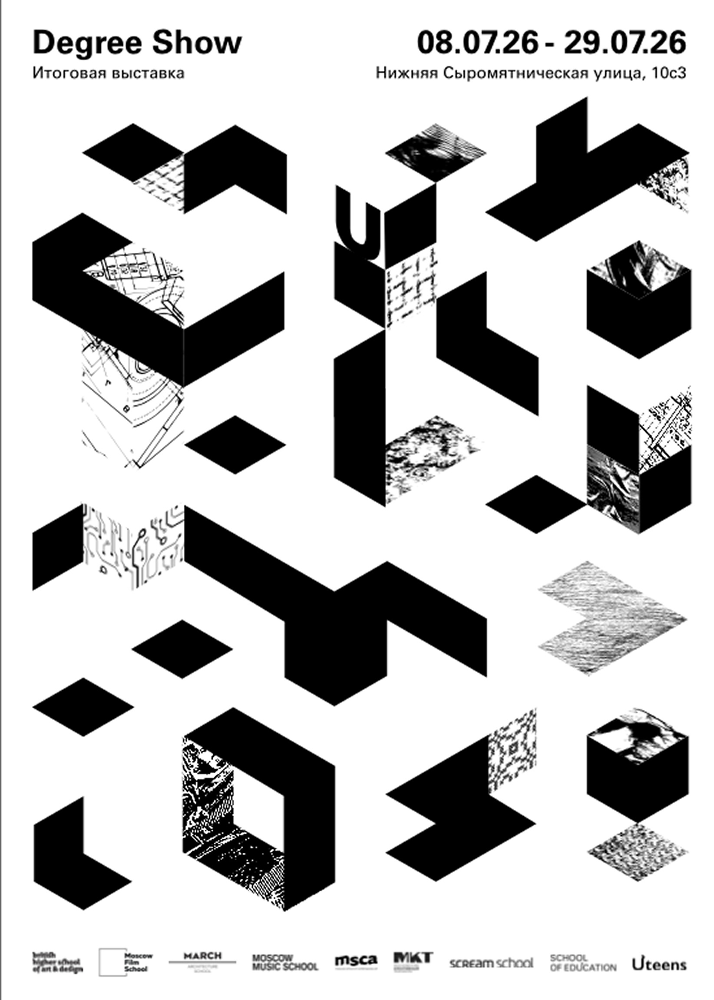
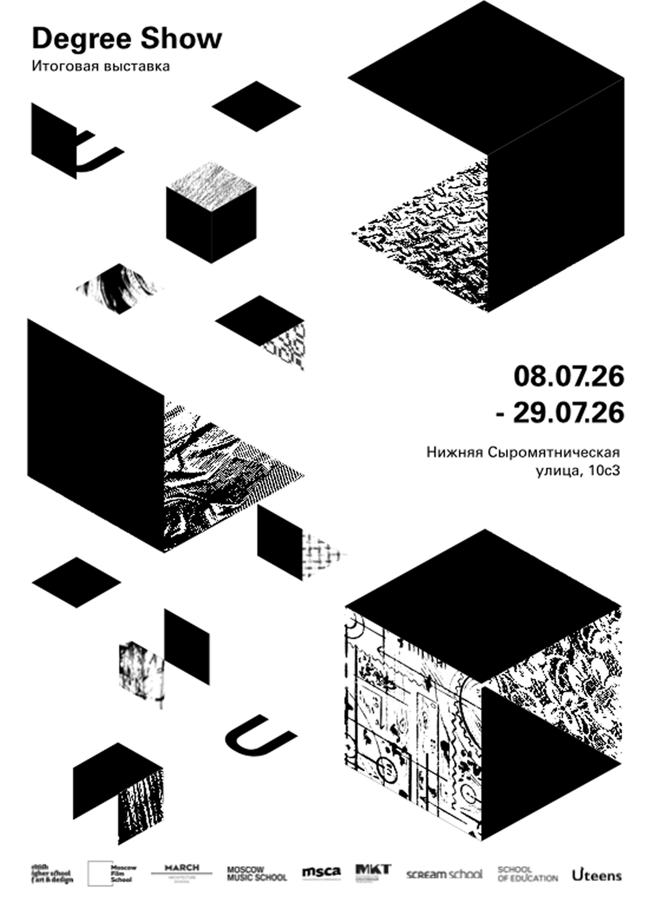
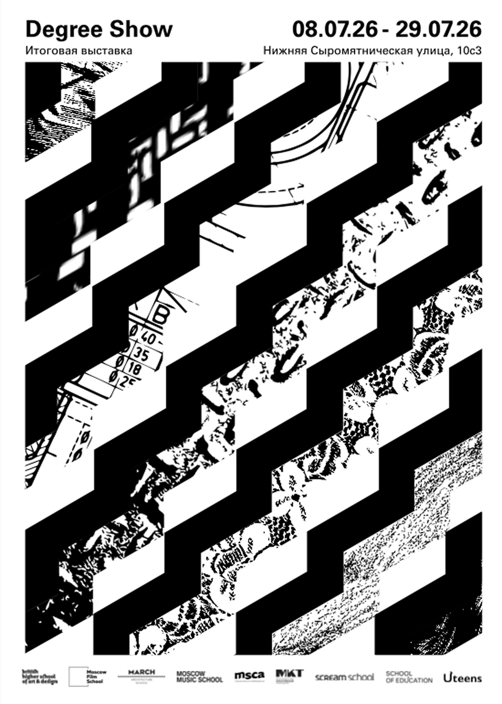
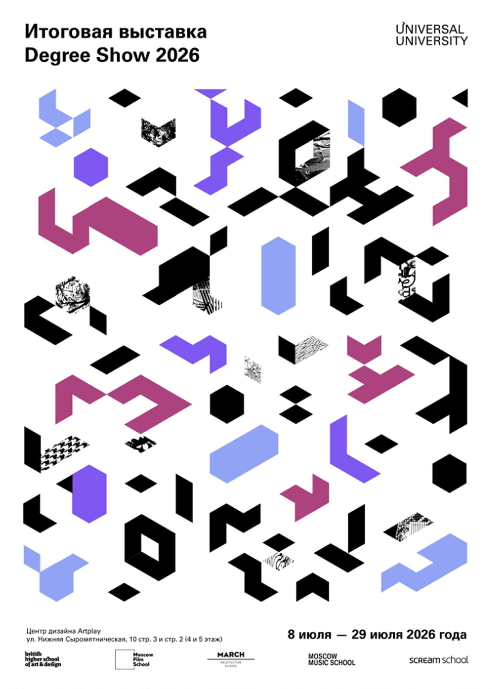
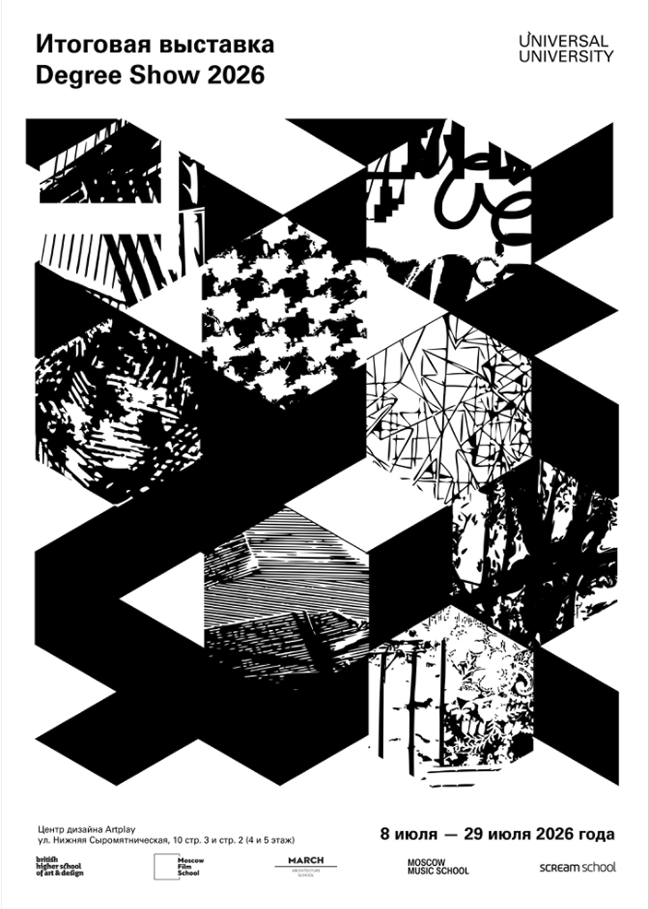
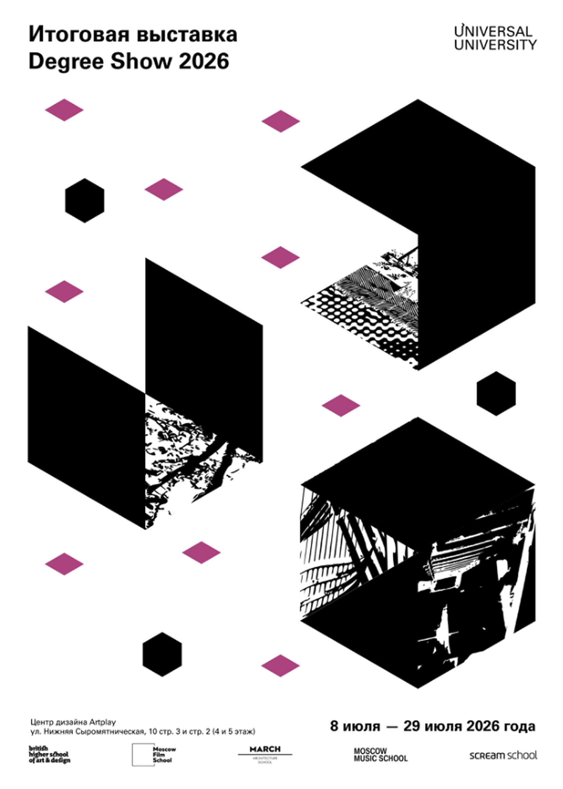
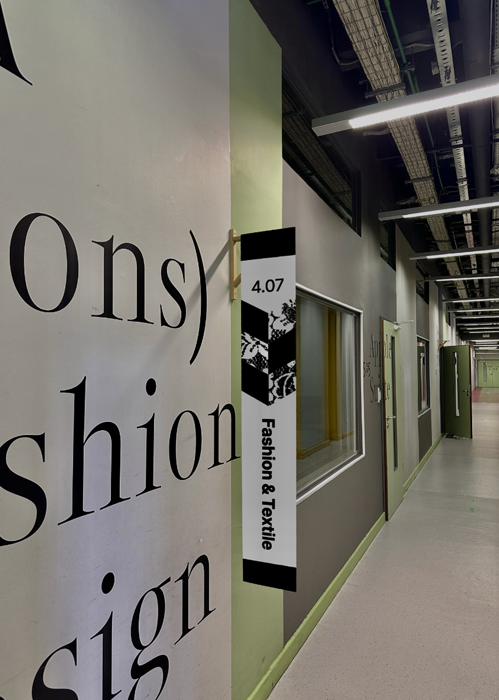
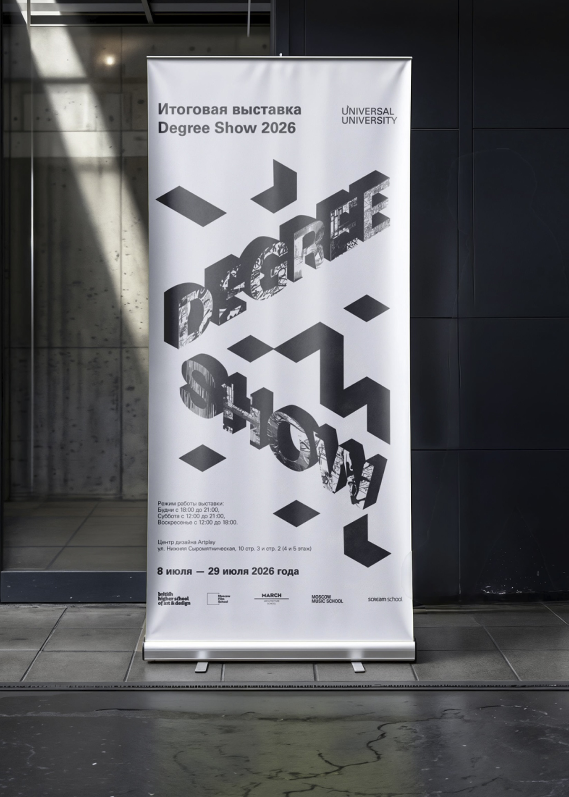
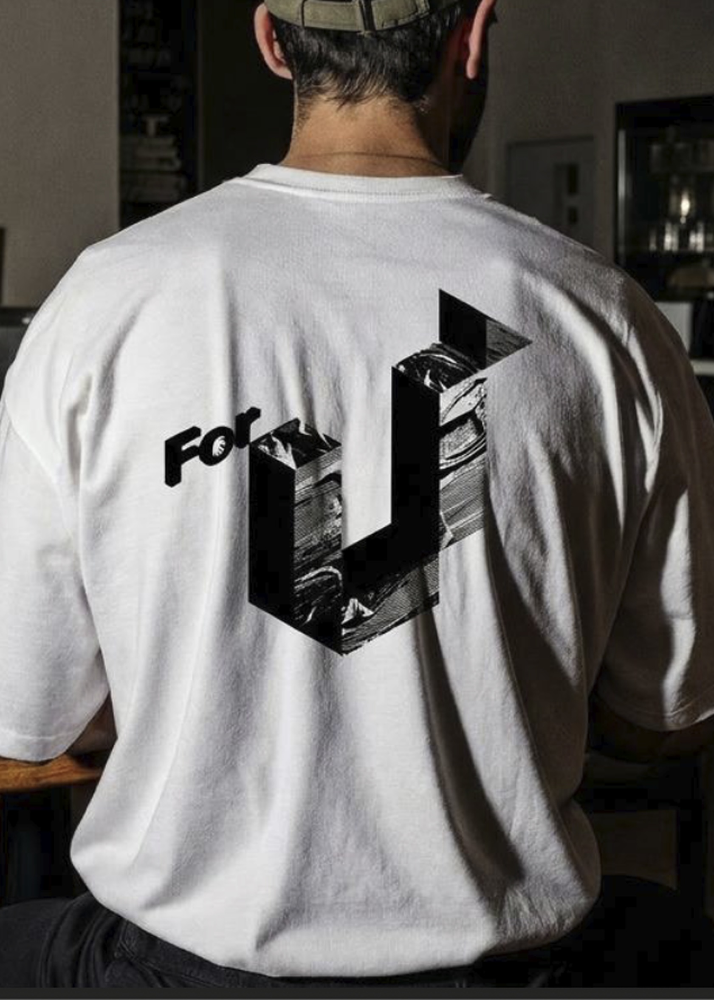
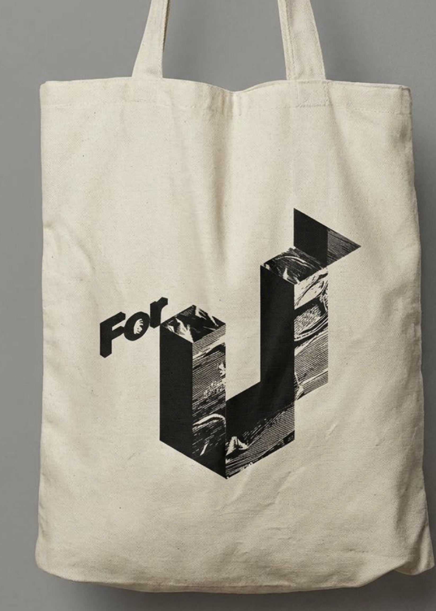

DEGREE SHOW 2026
Проект посвящён разработке айдентики для Итоговой выставки Универсального Университета. Работа велась в команде и включала создание визуальной системы, отражающей концепцию события и объединяющей разные направления выставки в единую коммуникацию. Основное внимание было уделено созданию гибкого визуального языка, который может адаптироваться под разные носители и форматы.
Концепция
Главное УТП и слоган UU - рушит правила, учит новому мышлению “think out the box”
Как университет дает фундамент и задает направление в будущее
Гармонично объединяет огромное количество разных людей и их интересов вместе


Первые наработки

Постеры






alt="">Флаг

alt="">Ролл ап

alt="">Мерч
